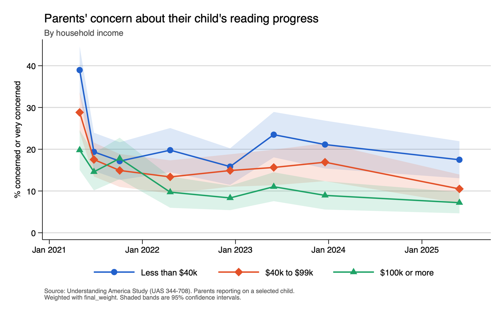
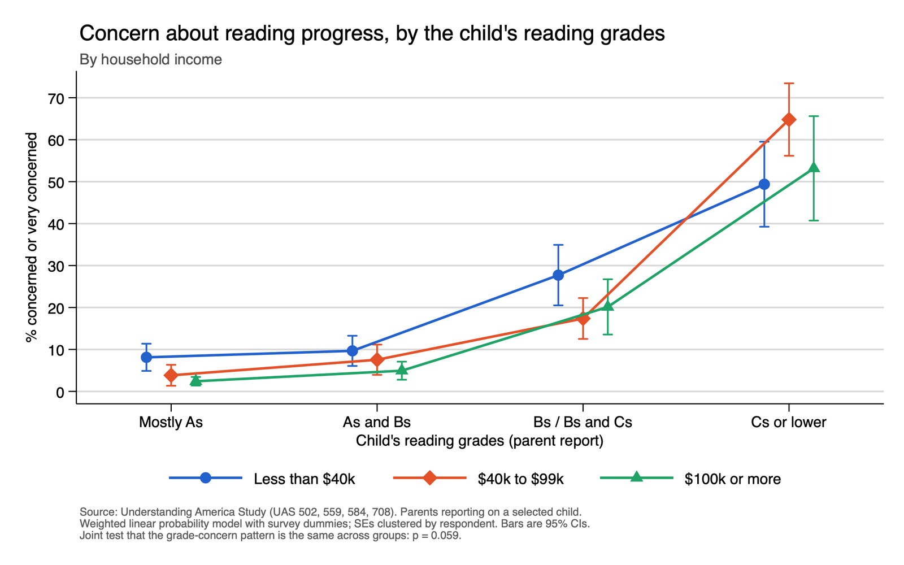
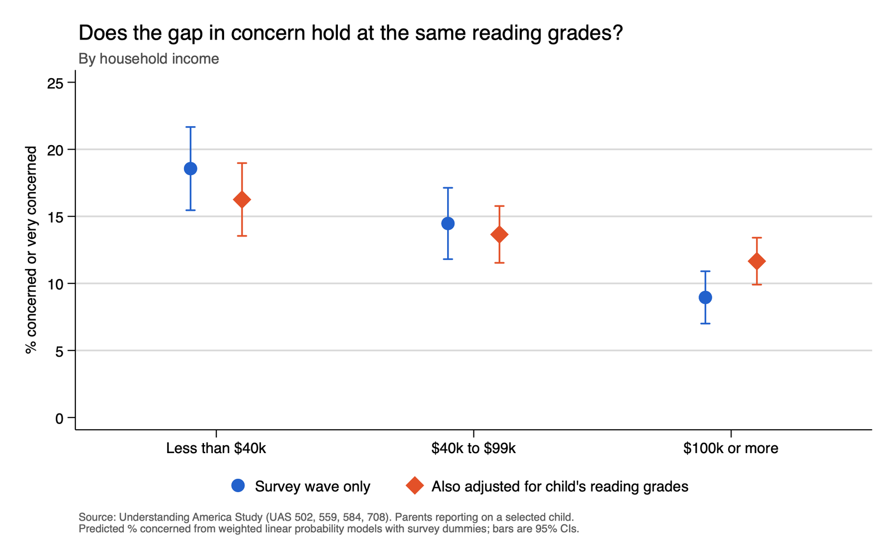

October 14, 2026
Grades: A Universal Anxiety
Nikole Hannah-Jones’ reflection on her choice to send her daughter to a New York City public school rather than a private one has spawned much discussion (much of it very online, some of it nasty) on the quality of American public schools, what (if any) obligations parents have to give their children a leg up, and what difference it might have made for Hannah-Jones’ daughter. A writer who has been on the education “beat” for quite a while is Freddie deBoer, who views school quality as having marginal effects at best. With respect to Hannah-Jones’ reflection on her daughter’s education, he says the following:
What the evidence tells us will matter is how well she [Hannah-Jones’ daughter] has previously performed in school, how well she performed in kindergarten, the central tendency of her academic life - which is to say, her academic talent. Because there is every reason to believe that such an attribute exists. Both behavioral genetics research and common sense strongly imply that this attribute has a meaningful genetic component. Of course environment also matters, but the top-down picture suggests that the environmental questions that matter are those like “Does the child have a pediatrician?,” “Does the child eat at least three meals a day?,” and “Does the child have at least one parent who is present in their lives who is not violent, an addict, mentally ill, or otherwise incapable?” These are, obviously, questions about conditions that schools are not equipped to change.
In other words, for all the handwringing about school choice, education research tells us that talented children tend to do well no matter where they go to school, and less talented children do less well, again, no matter where they go to school.
So why the handwringing? DeBoer has a hypothesis. Imagining a mediocre young student, “Mike,” he writes:
Regardless of who’s to blame for Mike’s performance, good or bad, we can reasonably ask why there appears to have been so much less ambient panic about how students in schools were doing in decades past… Mike’s parents were less likely to fall into a panic over his educational prospects because his educational prospects were fundamentally less essential to his ability to live the good life. Mike and his parents lived in a country where those without college degrees could still expect to earn a decent living that enabled them a middle class lifestyle and its various affordances: a home, a car or two, raising children.
I don’t have much to say about deBoer’s thesis on school quality, but I was interested in this idea of parental anxiety. If this sort of status anxiety about future economic prospects exists, would we find it more common among the middle and educated classes, since they are privy to more data and exposed to more potential status loss than lower classes?
I took a look at some of the data from the Understanding America Study (UAS) to investigate. The UAS is a probability-based longitudinal panel of American adults that has been running since 2014. Between spring 2021 and summer 2025, the UAS asked parents of school-age children how concerned they were about one child’s progress in reading and language arts in eight different surveys. Figure 1 shows the share of parents who were concerned or very concerned, over time and by household income. Concern was clearly much higher in spring 2021, during the COVID-19 pandemic. However, we also see that in nearly every wave, concern is highest among lower-income parents. When I broke it down by education, the pattern was similar but weaker: parents with a bachelor’s degree were usually the least concerned, but the gaps were smaller. So this isn’t exactly an educated upper-class anxiety.

Of course, one potential confounder is grades. It is likely that the children of higher-income parents are receiving better grades. Is their parents’ lower anxiety simply a function of those higher grades? Figure 2 shows concern by the child’s reading grades and household income, pooling the four surveys (2022–2025) in which parents reported grades. At each grade level except Cs or lower, concern is higher among the lowest-income parents, especially compared with the highest-income parents. One explanation could be that wealthier parents see their wealth as a shield or safety net for their children, even when those children are getting less-than-satisfactory grades.

So grade differences don’t explain everything, but how much do they explain? Pooled across those four surveys, about 19% of low-income parents and 9% of high-income parents were concerned, a gap of about 10 percentage points. Once grades are accounted for, the gap shrinks to under 5 percentage points but remains statistically significant (Figure 3).

This isn’t really evidence against deBoer’s thesis, but it does run counter to what I expected, and to how many people assume this plays out. We think of anxiety-ridden helicopter parents as educated and middle class, but it turns out that worry about children’s futures and educational attainment is widespread across income and education levels, and if anything, it is more common among lower-income parents.